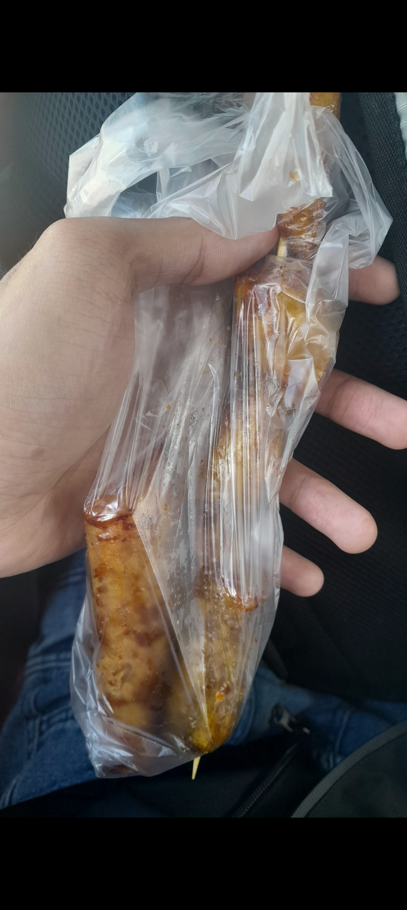
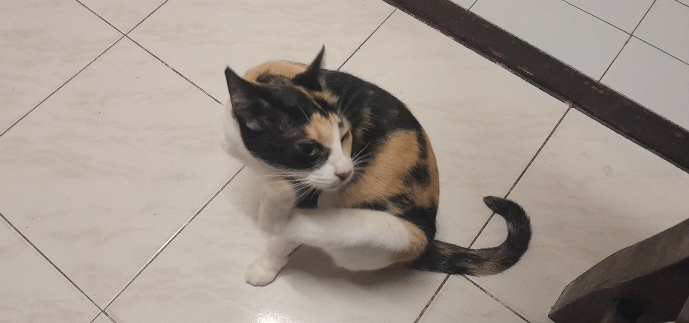

Woke up late around 9 since I stayed awake up until 3am. Managed to talk to Elaine since she also woke up around 2 lol. Time to head home!
Morning Rush
Woke up at 9am feeling groggy but excited. There's been a memo about asynchronous classes, so I'm heading home! Made my bed, brushed my teeth, and packed all my stuff. Locked the door to my room and headed out to the bus terminal.
The bus left around 11am. I was still tired from staying up late, so I immediately took a nap. Nothing beats sleeping on a moving bus — something about the rocking motion just knocks you out.
Bus Snack Time
Woke up around 1:30pm and felt my stomach growling. Perfect timing! There was a lady selling snacks on the bus — turon, turon na malagkit, and kamote bbq. I love kamote bbq, so I bought one of each: turon na malagkit and kamote bbq. Had a little snack while watching the scenery pass by. Simple pleasures.

Roadtrip Vibes
After my snack, I just enjoyed the rest of the roadtrip. Watching the province pass by, seeing familiar places, knowing I'm getting closer to home. There's something peaceful about long bus rides when you're not in a rush.
Home Sweet Home
Got home around 2:30pm and the first thing I did was eat a really big meal. I missed my mom's cooking so much — nothing beats home-cooked food after being away. Ate until I was completely satisfied.
And of course, I got to see my cat! I missed her very much. She immediately came up to me for pets. Best homecoming ever.

Nap & Hangout
After eating and playing with my cat, I took another nap. Traveling always tires me out. Woke up later in the afternoon and went to a friend's house to hang out. Caught up, talked about random stuff, just enjoying being back.
Went home, took a goodnight sleep. What a good day.
Home is where the cat is. And turon. And kamote bbq.
Glad to be back, even just for a bit.
— CJ